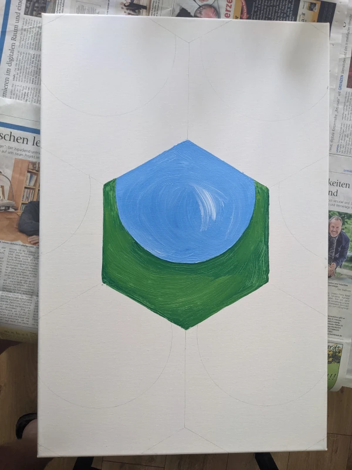
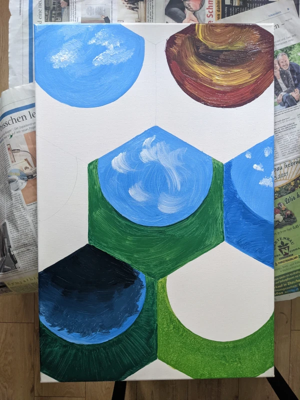
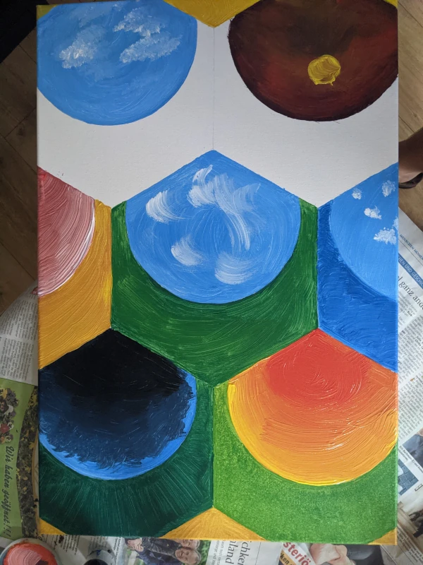
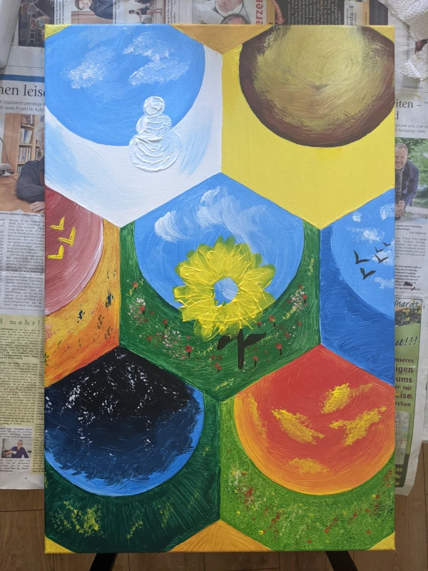

Let's get on with it
Groundwork
The base pattern of the whole painting is a honeycomb. I've sketched out the seven main hexagonal shapes with the help of some self-made paper templates and a pencil and filled them in with scenery that is meant to look like it's being viewed through a fish-eye lens.
Blue Sky, Green Grass
Each hexgonal tile contains a different scene representing a time of day or year. In this step I filled in the pieces that contain blue or green, like the sky and grass.
Dawn in the fields
The hexgons that contain yellow and red begin to take shape.
Details and the passage of time
After a few more rounds of refinement and adding details the background had finally been done. With all the backgrounds in place the composition now gives away that it's meant to resemble a kind of clock where the hands may wander through the scenes. This hand is an actual physical hand and is the next thing I prepared. I used the clockwork of a cheap no-name wall clock and placed it exactly behind the center of the piece with the pole sticking out through the canvas. Next I designed a bee out of primitive shapes all based around the topical hexagon - it would live at the end of the clock hand to circle the center through every scenery placed around it.
Finally done
The finished painting has the bee swirling about the scenery attached to the clock hand; a bit of a hassle to transport but the effect is well worth the effort.
Verdict
I'm very proud of this one, it came out just as I imagined, even the clock-work. Using paper patterns turned out to be sufficient but in the draft phase I would've appreciated if I had had pre-made ones available.
∎